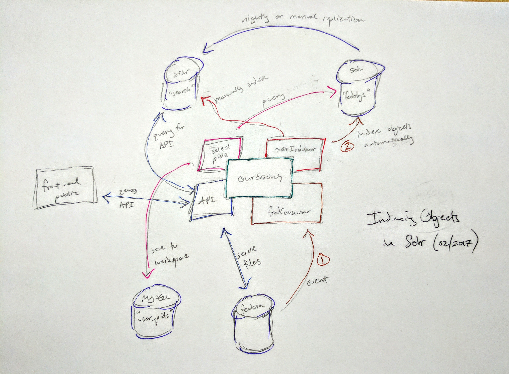

{
"published": true
}That moment, when posited ideas and hairbrained schemes begin to coalesce into a workable plan. That happened this morning after a few days of thinking and conferring about ways to update how we index digital objects from Fedora into Solr.

The funny thing, this is a return to a model we had in place at least 1-1.5 years ago now. At least parts. Currently, we have only one Solr core that powers the front-end, the same Solr core that we index objects to from Ouroboros (our internal manager), and the same core we search for objects to work on internally. This came about when we moved to a more distributed ecosystem, and major ingests or updates were not on the live, production machine anymore. A single core worked just dandy for some time.
However, we've started to revisit the indexing process, caching, and how we find and select objects to work on. One problem, until an object from Fedora was indexed in Solr, we wouldn't have the ability to select it in Ouroboros and manage it. We had workarounds: index all recently ingested objects, ingest via command line, etc., but these were numerous and confusing to remember. Our goal was to have some kind of database / store that was up-to-date with currently held objects in Fedora, that we could search to select objects.
Another problem was made evident via growth. As the amount of objects we manage was increasing, handling the searching and selecting of them client-side is becoming unfeasible. 10-12 seconds to return ~ 50k records, would not scale as we continue to grow. We needed to move our searching of objects server-side. We are using DataTables to filter and browse. The goal is to now write a Python(Flask)/Solr connector for server-side DataTable processing. I've done something similar for PeeWee, and am looking forward to mapping Solr into a similar endpoint that our Flask app can return data for DataTables.
We've flipped back on our Stomp client that listens to Fedora's messaging service, and will automatically index objects via our solrIndexer pipeline into the fedobjs Solr core. This core will be used for searching and selecting objects internally, and pushing those PIDs to a user-specific database of PIDs to workon. From that workspace, users can then work on objects as per normal in Ouroboros.
The API will ping the more stable search Solr core for powering the front-end, as we did formerly. The finesse, will be figuring how, and how often, to replicate changes from fedobjs to search, or manually index objects straight to search. We are envisioning nightly replications, with the option to manually index objects to the search core if we need them there ASAP.
Very excited to have a more rational and well-mapped approach. And you can tell, when the pencil hits the paper, and then the pen confirms (!), the model has been grokked, and we can finally dig into making it happen.
ALSO, that prefix "man" in "manual", I'm not a fan. Looking up the etymology of "manual" in the Oxford English Dictionary (OED) begins to suggest that the word has origins in "manuālis" (roughly, held in the hand), which points back further to "manus" (relating to "the hand", but also to Roman law, "A form of power or authority, principally involving control over property, held in some instances by a husband over his wife; a form of marriage contract giving a husband such authority.").
Time to find a better word.